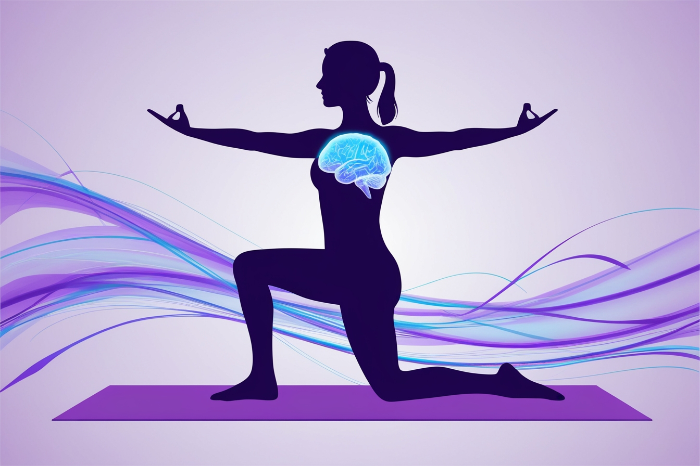

5 Beneficios del Yoga para tu Salud Mental
El yoga no solo es beneficioso para tu cuerpo, sino también para tu mente. Aquí te presentamos cinco formas en las que el yoga puede mejorar tu salud mental:
- Reduce el estrés y la ansiedad: Las técnicas de respiración y meditación del yoga ayudan a calmar la mente y reducir los niveles de cortisol, la hormona del estrés.
- Mejora la concentración y la claridad mental: La práctica regular de yoga puede aumentar la capacidad de enfoque y mejorar la función cognitiva.
- Aumenta la autoestima y la confianza en uno mismo: El yoga fomenta una conexión más profunda con uno mismo, lo que puede llevar a una mayor autoestima.
- Promueve el bienestar emocional: El yoga puede ayudar a regular las emociones y mejorar el estado de ánimo general.
- Ayuda a desarrollar la atención plena (mindfulness): La práctica del yoga enseña a estar presente en el momento, lo que puede reducir la ansiedad sobre el futuro o las preocupaciones sobre el pasado.
Incorporar el yoga en tu rutina diaria puede tener un impacto significativo en tu salud mental. Incluso unos pocos minutos al día pueden marcar la diferencia.
Comentarios